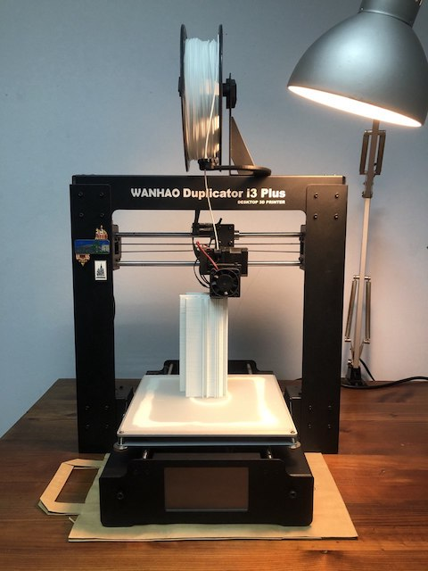
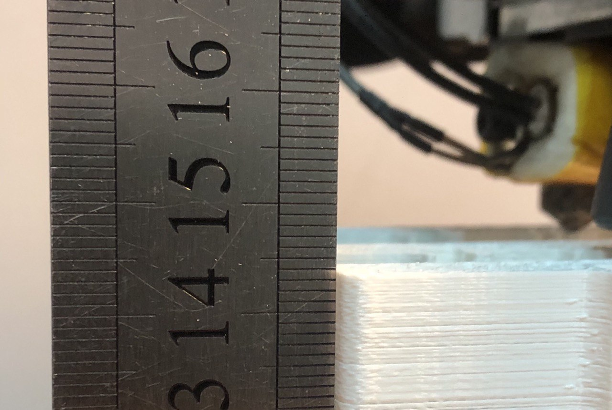
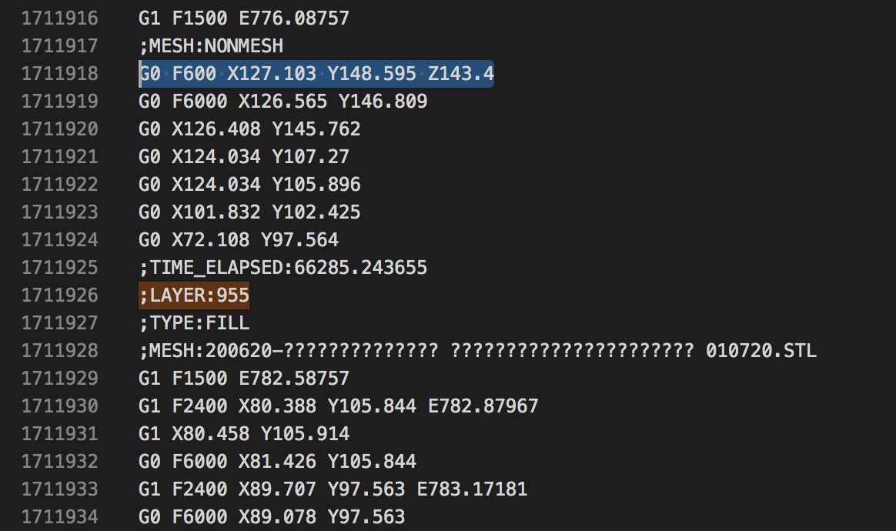

Восстановление печати 3D принтера
Последнее время я часто печатаю большие модели, время печати которых от суток и более. При этом начали проявляться проблемы с электроснаблежнием. Поскольку проблема повторяется уже во второй раз, хочу закрепить полученный опыт в этой статье на тему того, как можно продолжить печать с того же места после прерывания.
Я использую 3д-принтер
Wanhao Duplicator i3 Plusна прошивкеMarlin, однако статью постараюсь сделать универсальной, с изложением базовых принципов. Это должно быть применимо и для других FDM принтеров.
Краткая теория
Для начала нужно понимать, из чего состоит и как работает любой станок. В основном это несколько актуаторов по осям (движущих механизмов с электродвигателями) и некоторая электроника и механика для управления рабочим инструментом. Все эти части управляются соотвествующими драйверами, драйвера в свою очередь подключены к контроллеру.
На старых станках в качестве контроллера использовались десктопы с LPT портом, тоесть контроллер фактически был вынесен из станка. Однако сейчас роль контроллера может выполнять даже
Arduino Unoс еёatmega328. Это решает ряд проблем при использовании компьютера в качестве контроллера.
Надо понимать что обычно, роль контроллера – всего лишь выполнять команды, такие как сделай перемещение по оси X на столько-то, включи подогрев стола, используй текущую позицию как начало координат и тд. Закономерно, это привело к созданию абстракции (общего протокола численного программного управления (ЧПУ)) – G-code. Программа-slicer (например Cura, Fusion 360) создает управляющую программу как раз в формате G-code, однако не стоит забывать, что у G-code есть диалекты, тоесть каждый производитель прошивки, может немного поменять значения тех или иных команд, добавить функционал и тд. Для того, чтобы понимать чтоже самом деле происходит при посылке той или иной команды в станок, нужно:
- Узнать что именно за прошивка у вас установлена.
- Найти описание G-code команд на сайте производителя прошивки или просмотреть исходный код из которого прошивка собрана.
Восстановление печати

В моей версии прошивки Marlin на данный момент не реализована функция сохранения последней команды (youtube) или координат инструмента в энергонезависимую flash-память. А также нет алгоритма который мог бы рассчитать текущую позицию проведя инструмент до концевика. Ввиду этого, после перезагрузки, принтер не знает где у него находиться инструмент и какая должна быть следующая команда. И для того, чтобы исполнить любую операцию (и понимать где она будет сделана), нам нужно взять какую-то точку за начало координат и дальше проводить относительно неё все перемещения.
Поиск системы координат
Нулевая точка отсчета на принтере обуславливается расположением концевиков и, в моём случае, находится на плоскости стола в ближнем левом углу. Если не производить механическую настройку принтера между печатями смещение модели относительно этой точки будет в пределах повторяемости вашего принтера, что вполне удовлетворительно для восстановления печати.
В первый раз при отключении электричества мне сильно повезло тк одновременно печатающиющиеся модели занимали практически весь стол, однако место возле нулевой точки было не занято и позволяло опустить инструмент рядом с моделями, не задев их.
После этого я всегда не занимаю левый ближний угол для обеспечения возможности подобного манёвра. Однако, если у вас это место занято, можно:
- Аккуратно снять мешающуюся модель, точно запомнив место её нахождения;
- Добавить в
G-codeоперацию паузы (такие используются для смены пластика) или приостановить принтер из его меню после обнуления координат и поднятия инструмента на рабочую высоту;- Установить вашу модель назад (например с помощью клея);
- Продолжить печать.
Редактирование G-code
Все манипуляции нужно произвести в файле G-code текущей модели вручную. Он представляет из себя текстовый файл, зачастую большого размера. При попытке открытия такого обычным блокнотом у вас могут возникнуть проблемы, тк алгоритм данного редактора не рассчитан на работу с большими файлами и то и дело, то пытается весь файл прочитать, то весь файл записать и тд. Мне очень нравится редактор Visual Studio Code, который советую и вам.
G-code файл (FDM принтера) можно разделить на две части:
-
Шапка, там где производиться подогрев стола и инструмента, обнуление системы координат. Также зачастую в ней содержатся комментарии.
;FLAVOR:Marlin ;TIME:77525 ;Filament used: 40.8961m ;Layer height: 0.15 ;MINX:59.185 ;MINY:93.595 ;MINZ:0.15 ;MAXX:129.951 ;MAXY:154.405 ;MAXZ:174.9 ;Generated with Cura_SteamEngine 4.6.1 M140 S60 M105 M190 S60 M104 S210 M105 M109 S210 M82 ;absolute extrusion mode G21 ;metric values G90 ;absolute positioning M82 ;set extruder to absolute mode M107 ;start with the fan off G28 X0 Y0 ;move X/Y to min endstops G28 Z0 ;move Z to min endstops G1 Z15.0 F100 ;move the platform down 15mm G92 E0 ;zero the extruded length G1 F200 E6 ;extrude 6 mm of feed stock G92 E0 ;zero the extruded length again G1 F100 ;Put printing message on LCD screen M117 Printing... G92 E0 G92 E0 G1 F1500 E-6.5 ;LAYER_COUNT:1166 -
Повторяющиеся по своему виду наборы комманд для печати слоёв. При использовании, в качестве slicer’a, программы
Cura, вG-codeвсе слои любезно прокоментированы.;LAYER:0 M107 ;MESH:200620-?????????????? ?????????????????????? 010720.STL G0 F2400 X95.249 Y98.897 Z0.15 ;TYPE:WALL-INNER G1 F1500 E0 G1 F1350 X95.249 Y99.346 E0.01232 G1 X95.249 Y99.762 E0.02374 G1 X95.151 Y99.346 E0.02538 G1 X94.964 Y98.897 E0.03216 G1 X94.858 Y98.723 E0.03775 G1 X94.71 Y98.482 E0.04551 G1 X94.394 Y98.111 E0.05888 G1 X94.024 Y97.795 E0.07223 G1 X93.608 Y97.542 E0.08559 G1 X93.334 Y97.427 E0.09375 G1 X93.159 Y97.354 E0.09895 G1 X92.848 Y97.281 E0.10772 G1 X92.725 Y97.252 E0.11118 G1 X92.862 Y97.218 E0.11177 G1 X93.065 Y97.133 E0.11344 G1 X93.24 Y97.06 E0.11768 ...
У нас получается примерно следующий алгоритм:
-
Смотрим всё что находится в шапке и разбираем, что это означает.
Например, мб такая ситуация, использования датчика уровня стола
BLTouch– командаG30. Её нужно заменить на использование концевика.В целом убираем всё лишнее кроме подогрева стола и инструмента, обнуления координат. Если вы не используете специальных настроек или датчика уровня стола, в принципе можете не изменять настройки, главное понимать их смысл и чтобы он не противоречил с тем, что вам требуется.
-
Затем нужно максимально точно измерить высоту напечанной модели.

В моём случае получилось 143.5 мм. Поделив данную высоту на толщину слоя можно получить номер слоя на котором прервалась печать: 143.5 мм / 0.15 мм = 956.[6].
Я всегда округляю величину в меньшую сторону, тк экструдер горячий и не сильно страшно, если он чуть прижмет деталь при печати, в отличии от того, если он начнет класть слой в воздухе.
-
Теперь следует удалить из файла G-code все операции печати слоёв влоть до 956 (не совсем так).
Имейте ввиду, что нумерация слоёв в Cura идёт с нуля, а не с единицы, поэтому в комментариях ищите 955 слой.
Найти нужны вам слой можно воспользовавшись поиском (ища по слову
;LAYER:955). В месте откуда вы хотите удалить код, установить курсор и не меняя его положении прокрутите до начала файла, зажавShiftи установив курсор в новом месте, у вас выделится весь кусок для удаления.Печать каждого слоя начинается с команды перемещения инструмента на новую высоту, однако в случае, с
Curaэта команда содержится в конце предыдущего слоя, соотвественно её нужно тоже сохранить.
Также за этой командой следует несколько других перемещений, я их тоже оставляю тк эта последовательность не мешает и с неё продолжается печать отсутствующего слоя.
Кстати проверить правильно ли вы определили слой можно как раз исходя из значения Z в этой команде.
-
Как было сказано выше: «Печать каждого слоя обычно начинается с команды перемещения в некоторую точку, с которой начинается печатать слоя». Однако не факт, что алгоритм реализованный в прошивке выполнит не быстрое перемещение (одновременное перемещение по всем осям), а сначала подъём по оси Z, а уже затем по осям XY. В случае быстрого перемещения есть вероятность того, что инструмент, двигаясь с нулевой точки в точку на которой находится продолжение печати, заденет модели.
Поэтому после операции обнуления координат (шапки G-code), я добавляю команду перемещения в точку над уже напечатанными моделями –
G0 F0 X0 Y0 Z145. Подробнее можно прочитать здесь.
В моём случае получилась следующая УП:
...
G92 E0
G92 E0
G1 F1500 E-6.5
;LAYER_COUNT:1166
G0 F0 X0 Y0 Z145
G0 F600 X127.103 Y148.595 Z143.4
G0 F6000 X126.565 Y146.809
G0 X126.408 Y145.762
G0 X124.034 Y107.27
G0 X124.034 Y105.896
G0 X101.832 Y102.425
G0 X72.108 Y97.564
;TIME_ELAPSED:66285.243655
;LAYER:955
;TYPE:FILL
;MESH:200620-?????????????? ?????????????????????? 010720.STL
G1 F1500 E782.58757
G1 F2400 X80.388 Y105.844 E782.87967
...
Действуй
- На случай, если что-то пойдет не так, предлагаю сразу отметить маркером места установки деталей на столе.
- ВАЖНО! Перед запуском программы нагрейте экструдер принтера и с помощью меню уведить инструмент от детали над точкой начала координат. Я уже два раза начинаю перемещение экструдера на холодную и отрываю одну из моделей.
- Лишь затем запустите исправленную управляющую программу.